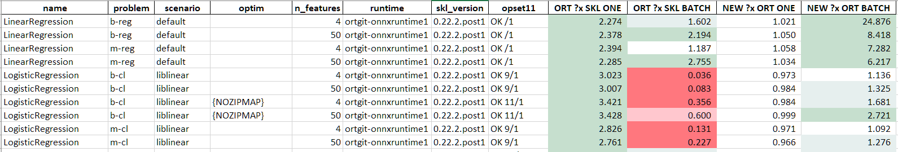

Compare two different onnxruntime¶
The following section uses what is introduced at Validates a runtime against scikit-learn to compare two different version of onnxruntime on a given list of models.
Bash script¶
The following script compares onnxruntime 1.1.2 to a local version of onnxruntime installed through a local pypi server available at http://localhost:8067/.
export models="LinearRegression,LogisticRegression,RandomForestRegressor,RandomForestClassifier,SVR,SVC"
export NOW=$(date +"%Y%m%d")
export suffix="LRSW-"$NOW
echo --ORT112-ENV--
export vers="112"
python -m virtualenv ort112 || exit 1
cd ort112
./bin/python -m pip install -U pip
./bin/pip install numpy scikit-learn onnx pyquickhelper matplotlib threadpoolctl lightgbm xgboost || exit 1
./bin/pip uninstall -y onnxruntime
./bin/pip install onnxruntime==1.1.2 || exit 1
./bin/pip install --no-cache-dir --no-deps --index http://localhost:8067/simple/ onnx onnxconverter-common skl2onnx || exit 1
./bin/pip install --no-cache-dir --no-deps --index http://localhost:8067/simple/ mlprodict || exit 1
./bin/pip freeze || exit 1
echo --ORT112-BENCH--
./bin/python -m mlprodict validate_runtime --n_features 4,50 -nu 3 -re 3 -o 11 -op 11 -v 1 --out_raw data$vers$suffix.csv --out_summary summary$vers$suffix.csv -b 1 --dump_folder dump_errors --runtime python_compiled,onnxruntime1 --models $models --out_graph bench_png$vers$suffix --dtype 32 || exit 1
echo --ORT112-END--
cd ..
echo --NEW-ENV--
export vers="GIT"
python -m virtualenv ortgit || exit 1
cd ortgit
./bin/python -m pip install -U pip
./bin/pip install numpy scikit-learn onnx pyquickhelper matplotlib threadpoolctl lightgbm xgboost || exit 1
./bin/pip uninstall -y onnxruntime
./bin/pip uninstall -y onnxruntime-dnnl
./bin/pip install --no-cache-dir --no-deps --index http://localhost:8067/simple/ onnxruntime || exit 1
./bin/pip install --no-cache-dir --no-deps --index http://localhost:8067/simple/ onnx onnxconverter-common skl2onnx || exit 1
./bin/pip install --no-cache-dir --no-deps --index http://localhost:8067/simple/ mlprodict || exit 1
./bin/pip freeze || exit 1
echo --NEW-BENCH--
./bin/python -m mlprodict validate_runtime --n_features 4,50 -nu 3 -re 3 -o 11 -op 11 -v 1 --out_raw data$vers$suffix.csv --out_summary summary$vers$suffix.csv -b 1 --dump_folder dump_errors --runtime python_compiled,onnxruntime1 --models $models --out_graph bench_png$vers$suffix --dtype 32 || exit 1
echo --NEW-END--
cd ..
echo --END--
Merge results¶
It produces two files: data112LRSW-20200311.csv and dataGITLRSW-20200311.csv.
The following script merges them and computes a speed-up between the two versions
and with scikit-learn.
from pprint import pprint
import pandas
from mlprodict.onnxrt.validate.validate_summary import merge_benchmark, summary_report
names = {'ort112-': 'data112LRSW-20200311.csv',
'ortgit-': 'dataGITLRSW-20200311.csv'}
dfs = {k: pandas.read_csv(v) for k, v in names.items()}
merged = merge_benchmark(dfs, baseline="ort112-onnxruntime1")
print('runtimes')
pprint(set(merged['runtime']))
add_cols = list(sorted(c for c in merged.columns if c.endswith('-base'))) + ['ort_version']
pprint(add_cols)
suma = summary_report(merged, add_cols=add_cols, add_index=['ort_version'])
pprint(suma.columns)
keep = [
'name', 'problem', 'scenario', 'optim', 'n_features', 'runtime',
'skl_version', 'opset11',
'RT/SKL-N=1',
'RT/SKL-N=1-base',
]
suma = suma[keep].copy()
def replace(x):
if not isinstance(x, str):
return x
return x.replace(
"'zipmap': False", "NOZIPMAP").replace(
"'raw_scores': True", "RAW")
suma['ORT ?x SKL ONE'] = 1. / suma["RT/SKL-N=1"]
suma['ORT ?x SKL BATCH'] = 1. / suma["N=10000"]
suma['NEW ?x ORT ONE'] = 1. / suma["RT/SKL-N=1-base"]
suma['NEW ?x ORT BATCH'] = 1. / suma["N=10000-base"]
suma['optim'] = suma['optim'].apply(replace)
suma = suma.drop(['RT/SKL-N=1', 'N=10000', 'RT/SKL-N=1-base', 'N=10000-base'], axis=1)
writer = pandas.ExcelWriter('merged.xlsx', engine='xlsxwriter')
suma.to_excel(writer, index=False, float_format="%1.3f",
freeze_panes=(1, 1))
workbook = writer.book
format0 = workbook.add_format({'bg_color': '#FF777E'})
format1 = workbook.add_format({'bg_color': '#FFC7CE'})
format2 = workbook.add_format({'bg_color': '#E6EFEE'})
format3 = workbook.add_format({'bg_color': '#C6DFCE'})
worksheet = writer.sheets['Sheet1']
pl = 'I2:L{}'.format(merged.shape[0] + 1)
worksheet.conditional_format(
pl, {'type': 'cell', 'criteria': '<', 'value': 0.5, 'format': format0})
worksheet.conditional_format(
pl, {'type': 'cell', 'criteria': '<', 'value': 0.8, 'format': format1})
worksheet.conditional_format(
pl, {'type': 'cell', 'criteria': '>=', 'value': 2., 'format': format3})
worksheet.conditional_format(
pl, {'type': 'cell', 'criteria': '>=', 'value': 1.2, 'format': format2})
writer.save()
The outcome is a spreadsheet which looks like this:
Notes¶
The script could be improve to measure some confidence interval. That’s left for later. The speedup computation is not entirely accurate as it compares two different runtime to scikit-learn but not exactly the same one. Every benchmark works independently, it runs scikit-learn. It assumes the every run of every same model returns similar results. For a better metric, the ONNX models should be generated first and only then the runtimes should be compared but it gives at least an order of magnitude.